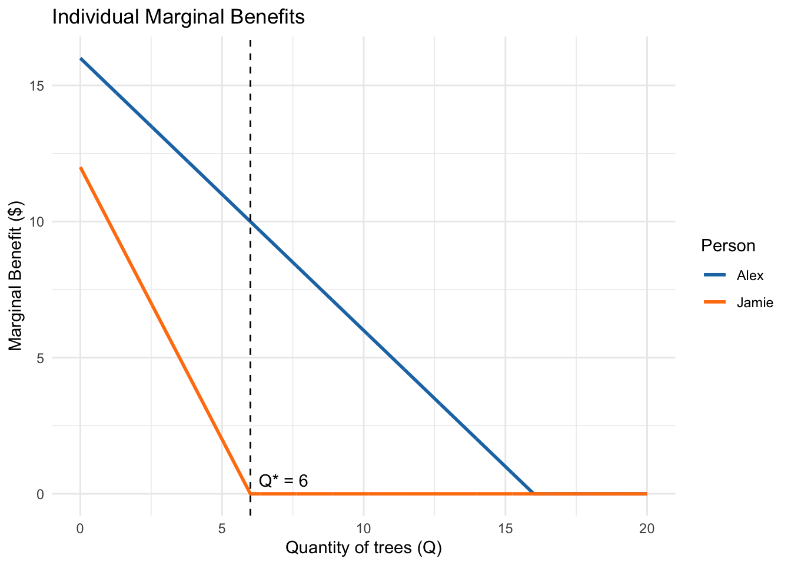
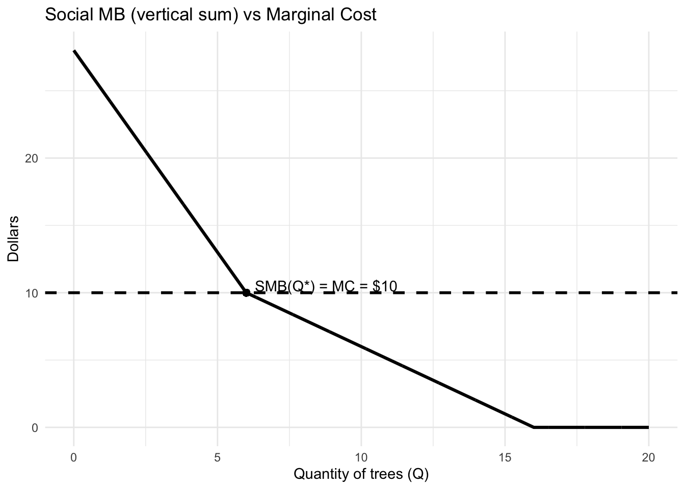
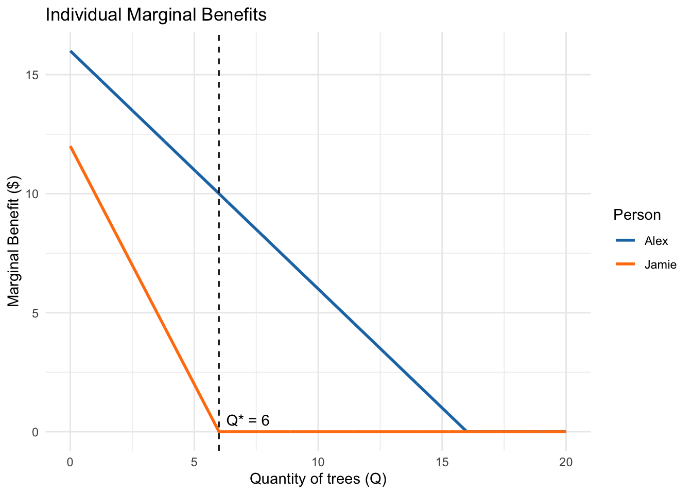
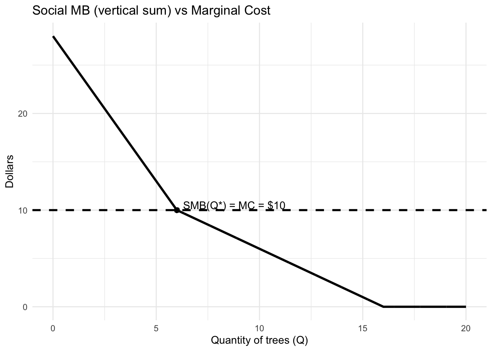

Q* = 6.00
Alex benefit = 78.00
Jamie benefit = 36.00
Total benefit = 114.00
Total cost = 60.00
Net surplus = 54.00

Public Goods in Action
Byeong-Hak Choe
October 3, 2025
October 8, 2025
Because everyone consumes the same quantity \(Q\) of a public good. The social marginal benefit (SMB) at that \(Q\) is the sum of each individual’s marginal benefit at that same quantity, so we add vertically the MB curves:
\[
\text{SMB}(Q) = \sum_i \text{MB}_i(Q).
\]
At \(Q=10\), Doug’s MB \(=\$5\) and Sasha’s MB \(=\$2\), so
\[
\text{SMB}(10) = 5 + 2 = \$7 = \text{MC}.
\]
SMB = MC holds, making \(Q=10\) optimal.
Suppose two people, Alex and Jamie, value urban tree planting as follows:
\[ MB_{Alex}(Q) = 16 - Q \quad \quad MB_{Jamie}(Q) = 12 - 2Q \]
(Values are in dollars; truncate at zero.)
The marginal cost of planting trees is constant at $10 per tree.
Tasks:
1. Draw the MB curves for Alex and Jamie separately.
2. Construct the social MB curve by vertical summation.
3. Find the optimal number of trees Q* where SMB = MC.
4. Compare the total benefits received by Alex vs. Jamie at Q*.
For \(0 \le Q \le 6\): both positive, \[ \text{SMB}(Q) = (16 - Q) + (12 - 2Q) = 28 - 3Q. \] For \(6 < Q \le 16\): Jamie’s MB is 0, so \[ \text{SMB}(Q) = 16 - Q. \] For \(Q > 16\): \(\text{SMB}(Q)=0\).
Solve in the relevant segment: \[ 28 - 3Q = 10 \;\Rightarrow\; 3Q = 18 \;\Rightarrow\; Q^* = 6. \]
Alex: \[ TB_{Alex}(Q^{*}) = \frac{1}{2}\times(16+10)\times 6 = 78 \]
Jamie: \[ TB_{Jamie}(Q^{*}) = \frac{1}{2}\times12 \times 6 = 36 \]
\[ TB_{Alex}(Q^{*}) + TB_{Jamie}(Q^{*}) = 114 \]
\[ TC(Q^{*}) = 10 \times 6 = 60 \]
Q* = 6.00
Alex benefit = 78.00
Jamie benefit = 36.00
Total benefit = 114.00
Total cost = 60.00
Net surplus = 54.00

Higher cost: \(MC=12\)
On \(0\le Q\le 6\): \(28 - 3Q = 12 \Rightarrow 3Q = 16 \Rightarrow Q^* = \boxed{16/3 \approx 5.33}\).
(Jamie’s MB at \(5.33\) is \(12 - 2\cdot 5.33 \approx 1.33 > 0\), so the piecewise region is valid.)
Higher demand for Jamie: \(MB_{Jamie}(Q)=15 - 2Q\)
For \(0 \le Q \le 7.5\):
\[
\text{SMB}(Q) = (16 - Q) + (15 - 2Q) = 31 - 3Q.
\]
Set equal to MC: \(31 - 3Q = 10 \Rightarrow 3Q = 21 \Rightarrow Q^* = \boxed{7}\).
Which change has a larger effect? Why?
1. What is “free riding”?
A free rider is someone who enjoys the benefits of a public good without paying for it.
Because public goods are nonexcludable, once they are provided, everyone benefits — whether they contribute or not.
Example: Once a city builds flood barriers, all residents are protected. Even those who did not contribute still enjoy the same protection.
2. Why is \(WTP < MB\)?
For private goods, people reveal their preferences by purchasing — they pay if \(P \le MB\).
But for public goods, individuals can benefit without paying, so their willingness to pay (WTP) is less than their true marginal benefit (MB):
\[ WTP_i < MB_i \]
This causes the aggregate demand curve to lie below the true social marginal benefit (SMB) curve, leading to underprovision when relying solely on voluntary contributions.
3. Why the market fails
Firms cannot collect enough payment to cover costs because of free riding.
As a result, markets stop short of the efficient provision level \(Q^*\), where:
\[ SMB = SMC \]
Hence, too little of the public good is produced relative to the socially optimal level.
4. Policy tools to narrow the gap
These tools realign private incentives with social benefits, helping the economy move toward the efficient \(Q^*\).
1. Efficiency
The optimal level of a public good occurs when the sum of all individuals’ marginal benefits equals the marginal cost of provision:
\[ \sum_i MB_i(Q^*) = MC(Q^*) \]
At this point, society’s total willingness to pay for the last unit just equals its cost — the condition for Pareto efficiency in public goods provision.
2. Financing mechanisms
Once \(Q^*\) is determined, the challenge becomes how to finance it:
3. The equity challenge
Efficiency tells us how much to produce; equity determines who should pay.
Two fairness principles guide policy: - Benefit-based fairness: Those who benefit more should contribute more.
- Ability-to-pay fairness: Those with higher incomes contribute more, even if benefits are similar.
The government must balance these principles, designing taxes or cost-sharing rules that achieve efficiency (\(SMB = SMC\)) while maintaining equity.
| Problem | Mechanism | Policy Response |
|---|---|---|
| Free riding → underprovision | \(WTP < MB\) | Government funding or intervention |
| Market failure | No price mechanism for shared benefits | Taxes, subsidies, or direct provision |
| Unequal benefits/incomes | Efficiency–equity tradeoff | Mixed cost-sharing rules |
Bottom line:
- Without government: free riding causes \(WTP < MB\) and underprovision.
- With government: collective financing (taxes, subsidies, matching) enables provision at the efficient level \(Q^*\).
- The policy goal is to achieve both efficiency (produce where \(SMB = SMC\)) and equity (fair cost-sharing across individuals).